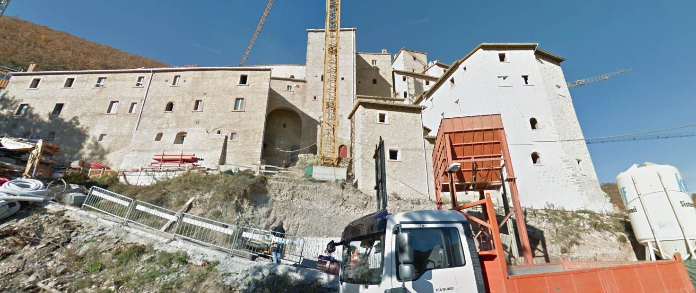

Stiamo ricostruendo il passato di Nyx. 🔎
Abbiamo trovato una foto nei suoi file: mostra un cantiere vicino a un castello. Non sappiamo dove sia, ma le foto scattate con un dispositivo digitale nascondono qualcosa di molto utile...
Ogni immagine digitale contiene dati nascosti chiamati metadati EXIF: il modello della fotocamera, la data, e spesso le coordinate GPS del punto esatto dove è stata scattata.
Questa prova ha due fasi: prima trovate le coordinate nella foto, poi cercate il posto in Street View.
Questa foto è stata trovata nei file di Nyx. Scaricatela sul vostro dispositivo, poi cliccate "Analizza metadati EXIF" per vedere i dati nascosti. Cercate le coordinate GPS: vi diranno dove è stata scattata.

In zona è stato avvistato un camion con scritto il nome della ditta. Cerca segni di lavori in corso, cantieri, mezzi parcheggiati o cartelli. Il camion potrebbe essere in qualsiasi punto vicino al castello.
Il camion non è visibile nelle foto recenti — la ditta era in zona nel 2011. Street View conserva le foto storiche.
Questa tecnica si chiama OSINT (Open Source Intelligence): cercare informazioni nascoste tra dati pubblici. I metadati EXIF nelle foto, le vecchie immagini di Street View, i post sui social — tutto quello che pubblichiamo online può raccontare la nostra storia. Per questo è importante fare attenzione a cosa condividiamo in rete!
{kind=link}